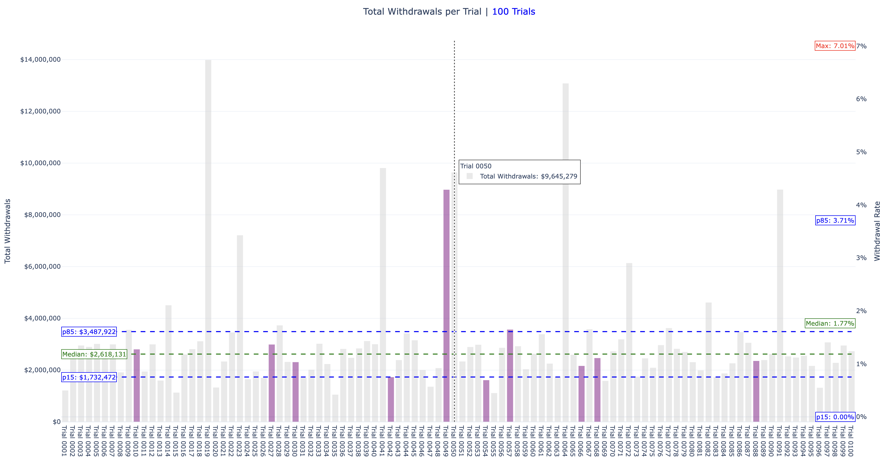
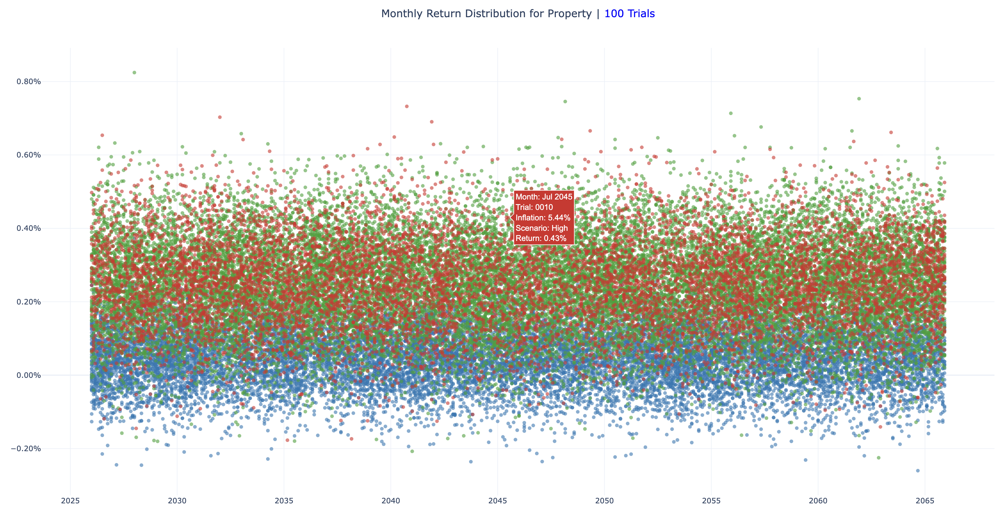
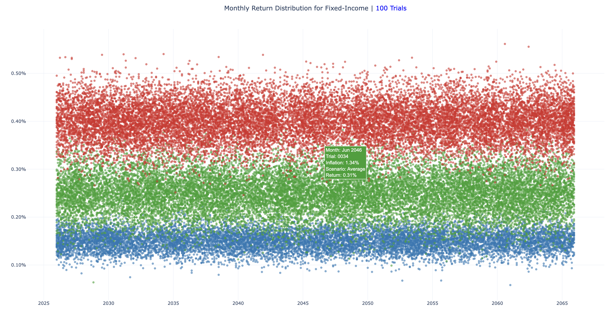
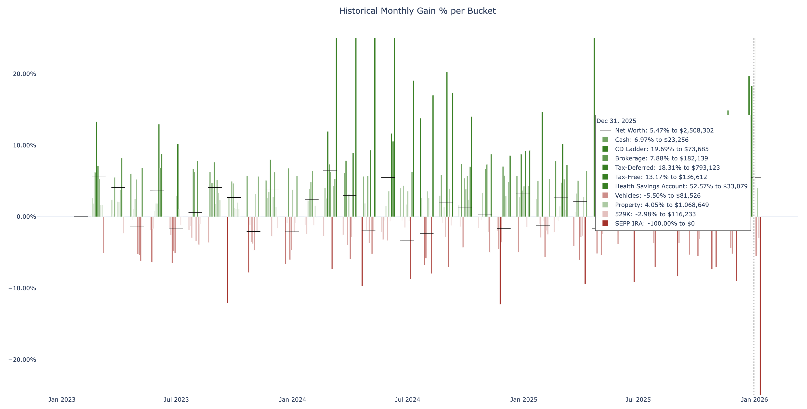

📊 Visualization Guide
Nomad Wealth includes a visualization layer that generates interactive Plotly charts and CSV exports. These charts turn complex simulations into clear, intuitive visuals that help you understand your retirement outlook, spot risks, and build confidence in your plan.
🎲 Monte Carlo Charts
Monte Carlo charts summarize results across all trials, showing probabilities and ranges. They help you see the “big picture” of how your plan performs under uncertainty.
Net Worth Over Time

- Method:
plot_mc_networth() - Purpose: Shows the distribution of net worth outcomes with median trajectory and 15th/85th percentile bands.
- How to use it: Look at the median line to see your most likely trajectory. The shaded bands show optimistic and pessimistic scenarios. If the lower band dips below zero, that’s a warning sign for sufficiency risk.
Taxes and Withdrawal Rates


- Method:
plot_mc_totals_and_rates() - Purpose: Displays total taxes and withdrawal rates across trials.
- How to use it: The withdrawal chart shows whether your spending levels are sustainable — focus on modeling for lower median withdrawal rates. Use the tax chart to understand how much of your income is lost to taxes over time - focus on modeling for lower median tax rates.
- Note: This chart is only available in Detailed Mode.
Taxable Balances at SEPP Milestones

- Method:
plot_mc_taxable_balances() - Purpose: Highlights taxable account balances at the SEPP end month.
- How to use it: Check whether you have enough liquidity in taxable accounts when you turn 59.5 yeas old to avoid early withdrawal penalties - focus on modeling for a higher positive taxable balance according to your risk tolerance.
Monthly Market Returns



- Method:
plot_mc_monthly_returns() - Purpose: Shows distributions of monthly returns for property, fixed income, and stocks.
- How to use it: Used for transparency to validate the gains and losses of your portfolio, this chart shows the annual inflation rate and scenario per asset type, plus the monthly gains/losses percent and the trial number.
- Note: This chart is only available in Detailed Mode.
🧾 Example Trial Charts
Example trial charts zoom into a single simulation, showing how one possible future unfolds.
Account Balances Forecast

- Method:
plot_example_forecast() - Purpose: Forecasted balances over time for each bucket.
- How to use it: See how your assets evolve in one trial. This helps you visualize how your model affects different buckets over time and what thresholds you can set to optimize your plan.
Income and Taxes Breakdown


- Method:
plot_example_income_taxes() - Purpose: Annual income and tax breakdowns.
- How to use it: Identify which income sources drive your tax liability. This helps you spot opportunities for tax optimization, like Roth conversions or timing withdrawals.
Transactions in Context

- Method:
plot_example_transactions_in_context() - Purpose: Shows transactions alongside account balances.
- How to use it: Connect spending and inflows directly to changes in balances. This helps you understand the impact of big expenses or income events.
- Note: This chart is only available in Detailed Mode.
Annual Transactions

- Method:
plot_example_transactions() - Purpose: Displays transactions for a given year.
- How to use it: Use this chart to better understand income flows to investments and expenses in future years to help you understand your plan.
Monthly Expenses

- Method:
plot_example_monthly_expenses() - Purpose: Visualizes monthly expenses over time.
- How to use it: Spot spending patterns and see how inflation or healthcare costs (Medicare, IRMAA) affect your monthly budget.
📜 Historical Charts
Historical charts provide context by showing past performance, grounding your forecasts in reality.
Monthly Gains by Account

- Method:
plot_historical_bucket_gains() - Purpose: Shows monthly gain/loss trends for each account.
- How to use it: Identify which accounts contributed most to net worth changes. This helps you understand historical strengths and weaknesses in your portfolio.
- Note: This chart is only available in Detailed Mode.
Net Worth Trajectory

- Method:
plot_historical_balance() - Purpose: Net worth line chart with gain/loss bars.
- How to use it: See your overall financial trajectory and spot periods of growth or decline. This provides a baseline for comparing future simulations.
- Note: This chart is only available in Detailed Mode.
⚙️ Flags & Modes
SHOW_*flags → control whether charts are displayed interactively.SAVE_*flags → control whether charts are exported to HTML/CSV.DETAILED_MODE→ enables full transparency with additional charts and context.
📝 Visualization Notes
Nomad Wealth’s charts are designed for clarity and reproducibility:
- Consistent labels, colors, and formatting across all charts.
- Percentile overlays (p15, median, p85) make scenario comparisons easy.
- Dual y‑axes show both dollar values and percentage rates where relevant.
- CSV/HTML exports preserve interactive and tabular views for sharing or review.
- Logging ensures every chart export is traceable.
Specialized charts:
- Sankey diagrams → visualize flows between accounts, showing deposits, withdrawals, transfers, gains, and losses.
- Transactions in context → align flows with balances for transparency.
- Forecast charts → show account‑level visibility, net worth trajectory, and age overlays.
- Monte Carlo charts → highlight retirement probabilities, tax burdens, withdrawal sustainability, and account liquidity.
📚 Related Pages
- Usage Guide → explains workflow and output files
- Architecture Overview → system design and visualization integration
- Simulation Logic → monthly loop and aggregation steps